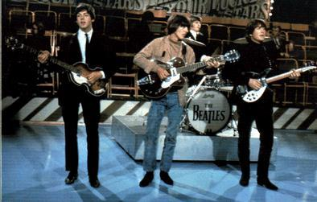
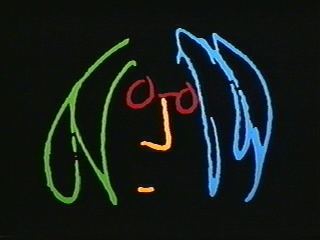

|  | La Página de The Beatles del Neto |
| I have an English Version |
| Aquí encontrarás mi colección de curiosidades relacionadas con The Fab Four. |  |
Ultima actualización: |
|
|
|
|
|
Strawberry Fields Forever fue compuesta por Lennon para ser incluida en el LP SEARGENT PEPPER'S LONELY HEARTS CLUB BAND, pero la lanzaron antes en un disco sencillo junto con "Penny Lane".
Back In The USSR. Notarán que Paul McCartney todavía no tenía la letra completa pero el ritmo final ya estaba presente.
A Case Of The Blues. Esta canción de John Lennon nunca se grabó en este disco ni en ningún otro.
Child Of Nature. Una muy bonita melodía con una letra estilo hippie, donde Lennon se declara un "niño de la naturaleza". No se grabó en este album ni en ninguno de The Beatles, después apareció en el LP IMAGINE con otra letra y con el título "Jealous Guy".
Cry Baby Cry. Lo que Lennon llamaba "una canción de cuna", aunque el tema trata de liberación femenina; aquí John empieza a externar su deseo de convertirse en un "amo de casa" ya que el rey cocina y cuida a los "niños de la reina".
Don't Let Me Down (Versión 1). Empezaba a tomar forma la canción que Lennon le compuso a Yoko, la cual completó con el verso medio (bridge) para lograr una Versión 2 que se parece más a la definitiva. Allá más abajo, pueden oir lo que grabaron durante las LET IT BE SESSIONS, que es casi la misma que salión el disco sencillo de 45 rpm (no la incluyeron en este album blanco).
Glass Onion. Lennon dijo que había escrito esta pieza pensando en The Beatles y Apple Corps., por eso menciona algunas canciones ("I told you 'bout Strawberry Fields") y "aclara" que "la morsa era Paul".
Everyone Had A Hard Year. Lennon empezaba a armar lo que terminaría como parte de la canción "I've Got A Feeling" en el LP titulado LET IT BE (ver más abajo).
Julia (Versión 1). John le canta con ternura a su madre en esta hermosa canción, la cual mejora y casi termina en Julia (Versión 2) y una versión más que me encontré Julia (Versión 3)
Everybody's Got Something To Hide Except For Me And My Monkey. Un título largo (inspirado por un dicho del Maharishi) para una canción con una letra que se puede tomar como muy profunda o muy neurótica. La versión que aquí se oye es muy diferente a la que apareció en el LP.
Revolution. John Lennon canta su protesta contra la violencia y los idealistas que favorecen las guerras. Lo acompañan los otros con las palmas de las manos y su voces.
Oh
My Love. Este bello poema no se incluyó en el album. Lenon la
cambió, mucho, y la mejoró, bastante, para integrarla a su
LP IMAGINE de solista.
One After 909. Desde que se juntaban a tocar en Liverpool, por allá en 1961, ya traían esta pieza rocanrrolera. La sacaron de los archivos y la lanzaron casi exactamente igual que como la cantaban antes. Aquí se oye un intento que se corta abruptamente.
Across The Universe. Según Lennon, esta fue la canción más elaborada y poética que él compuso. La donó primero a un grupo que defendía la vida de los animales, quien la usó como presentación.
Get Back iba a ser el tema del nuevo disco (el que terminó como el disco blanco) y The Beatles la cantaban para aflojar los dedos, como en esta ocasión. Paul se divierte cambiando la letra y mencionando a diferentes grupos étnicos.
Una de Harrison que no sé cómo se llama. Si alguien la reconoce, por favor mándeme un mensaje. Parece ser una canción "a la Dylan" y con una letra interesante (dice María que es "Rumblin' Woman", "I Threw It All Away", de Dylan,y "Mama, You've Been On My Mind").
I Me Mine. En esta grabación se oye a Harrison dando instrucciones a los otros para que toquen su canción. Hasta la Yoko Ono andaba metida en el ensayo, lo cual molestaba a Paul, Ringo y George, ya que "siempre andaba con John para todos lados, hasta en el estudio".
Jam session. Aquí se oye una tocada de varias canciones: Paul da su versión de "Penina", John grita su "Shakin' in the 60's" (original de Dick James), luego se oyen otras más).
Let It Be. McCartney les da instrucciones a sus compañeros para que toquen y canten la canción, según él la había concebido.
I've Got A Feeling. Con el segmento que mencioné antes y que Lennon llamaba "Everyone Had A Good Time".
She came In Through The Bathroom Window formó parte del medley que está en el lado dos de ABBEY ROAD. Aquí la cantan de forma jocosa y hacen bromas sobre la letra. Luego, Paul se sienta al piano y canta más tranquilo esta otra versión. Por lo menos empieza bien, aunque termina cambiando la letra con su chistosadas.
Two Of Us. Una canción que no se oyó mucho aunque es la primera del LP LET IT BE.
Susy
Parker. Es una "desgreñada" que se dan para relajarse. Por cierto,
esta canción era original del grupo pero nunca la grabaron.
Golden Slumbers . Medley. Un segmento de lo que terminaría siendo la gran sinfonía beatle del lado 2 del album.
Because. Cuando la canción tenía una vocalización complicada, se grababa primero la música y luego las voces (oyendo la música en los audífonos). Este es un ejemplo de tal procedimiento. Se oyen solamente las voces y, muy quedo, la música que llegaba desde los audífonos.